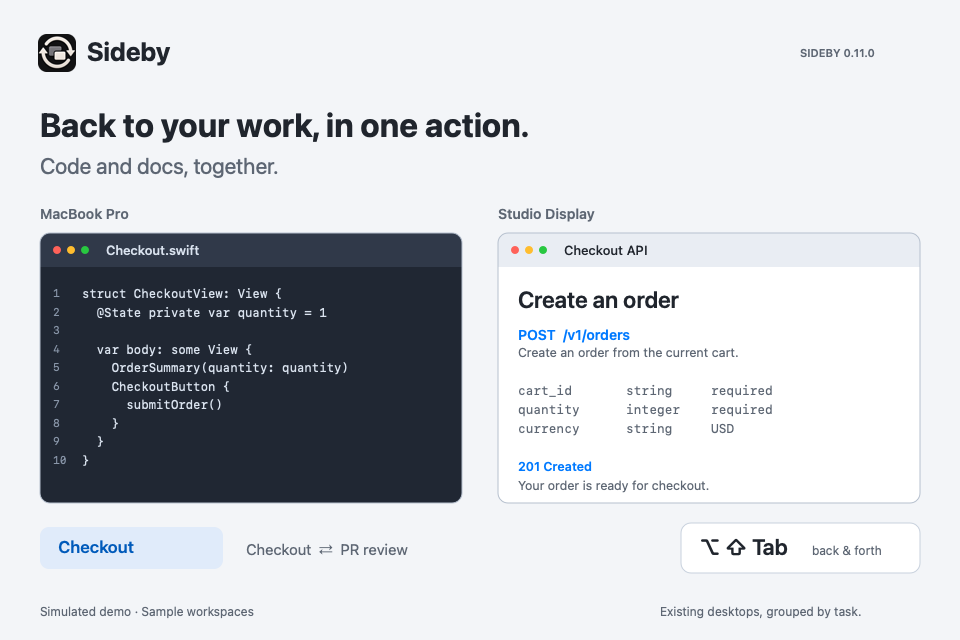
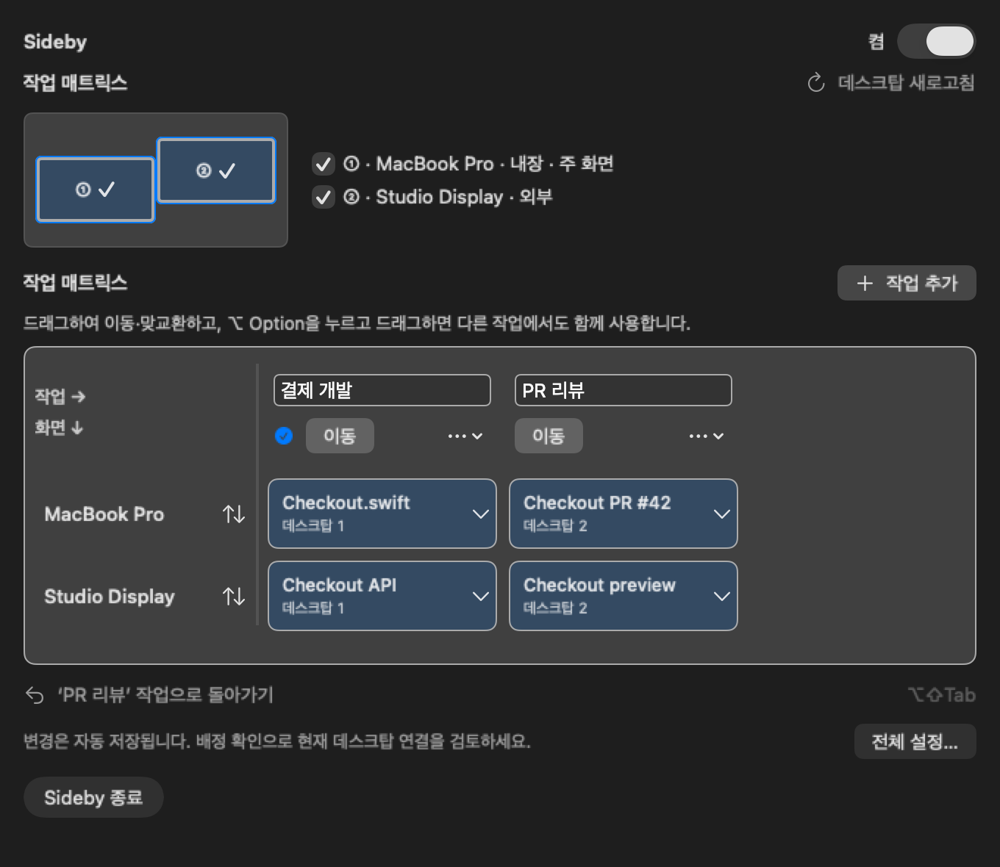
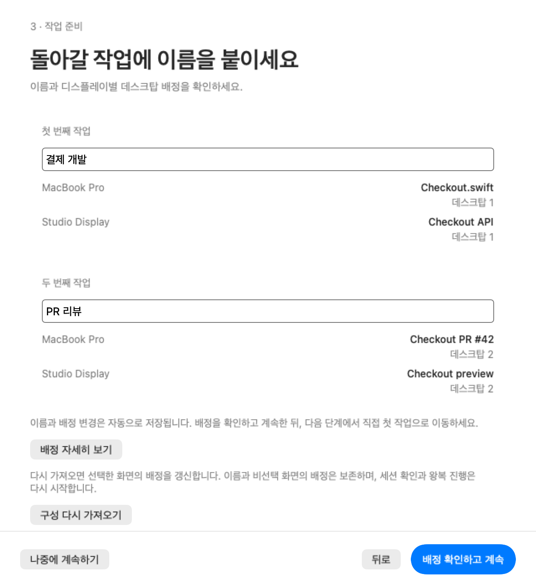
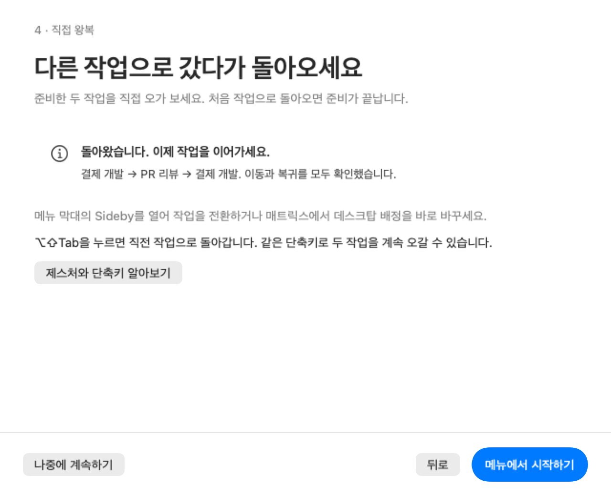
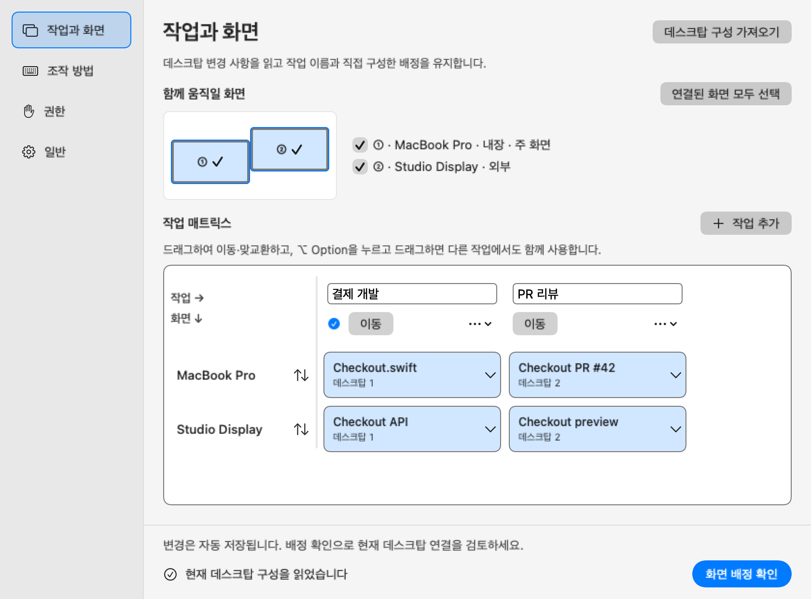
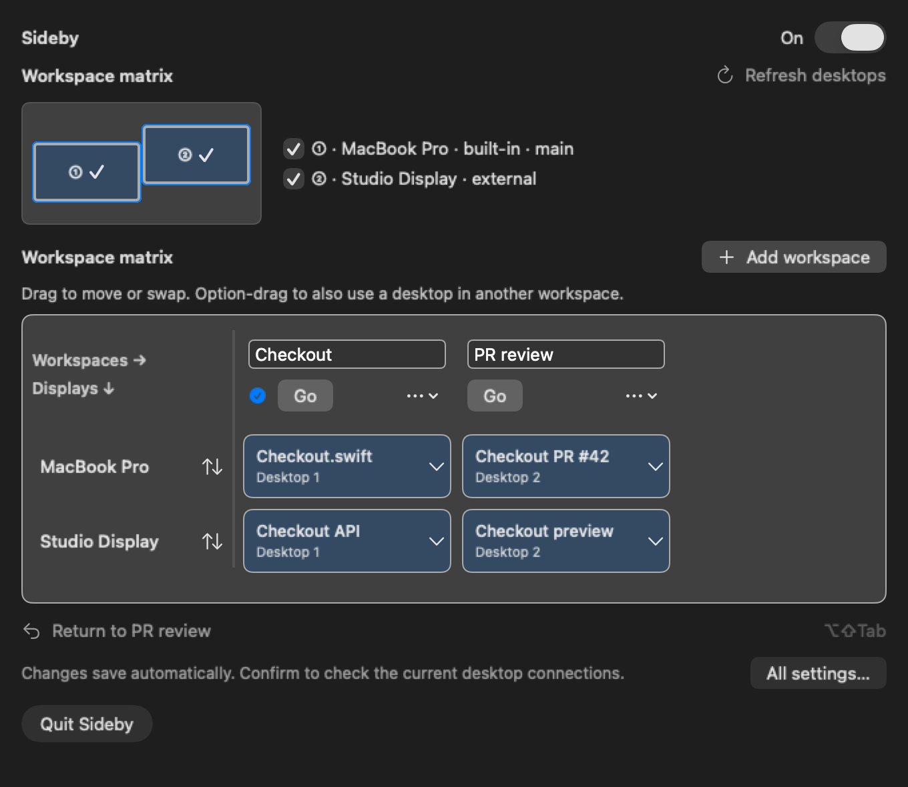
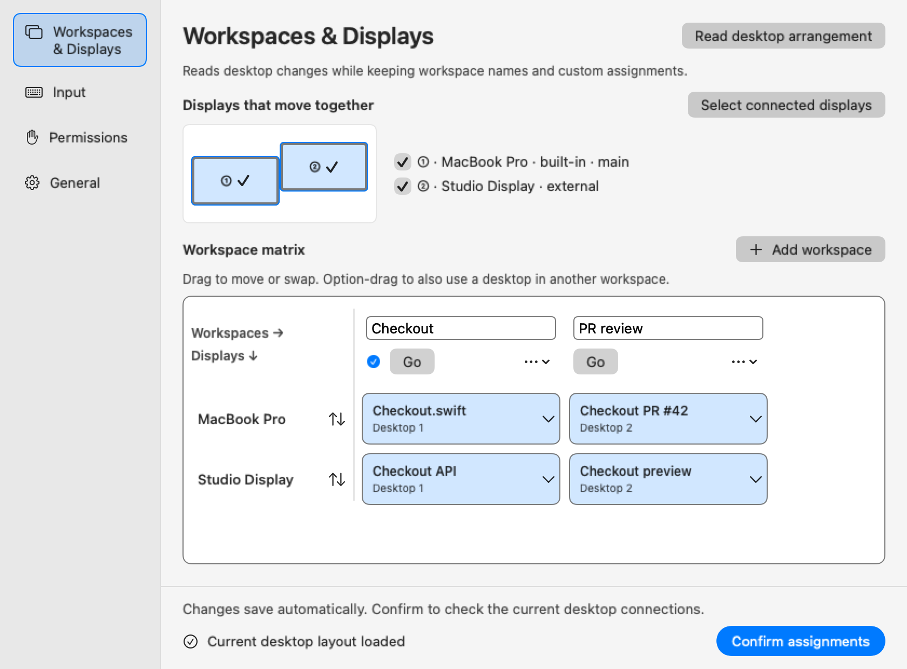
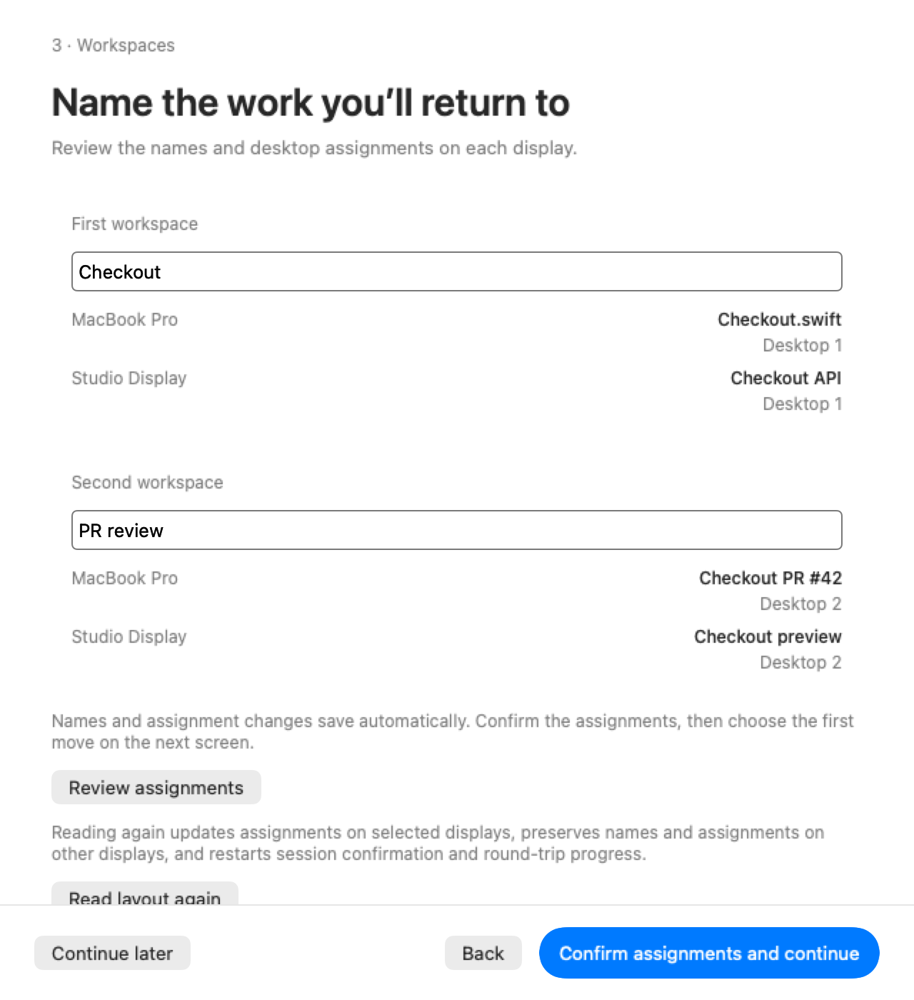
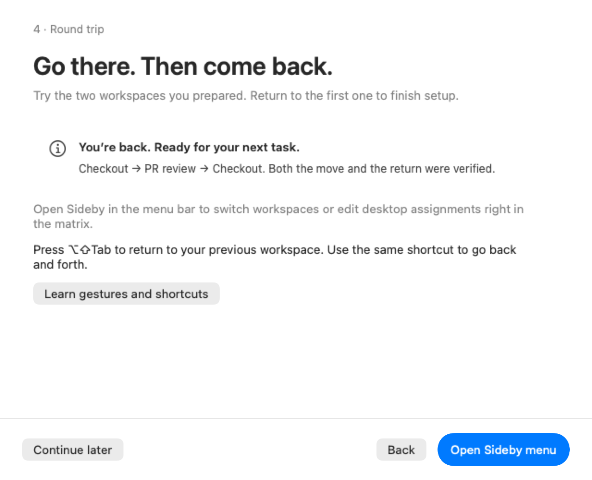

Sideby 0.11.0
하던 작업으로 한 번에 돌아오세요.
코드와 참고 문서를 결제 개발로 묶어 두고, 리뷰 요청이 오면 PR 리뷰로 전환하세요. Mac 화면 하나에서도, 외부 화면과 함께 사용할 때도 작업별로 데스크탑을 오갈 수 있습니다.

실제 Sideby 매트릭스와 샘플 작업 데이터를 사용했습니다. 데스크탑과 전환 애니메이션은 시뮬레이션입니다. 약 22초.
GIF 원본
작업 선택과 구성 편집을 메뉴에서 바로
- 화면을 함께 전환: 작업의 ‘이동’ 버튼을 누르면 각 화면의 배정된 데스크탑으로 이동합니다.
- 같은 단축키로 복귀: ⌥⇧Tab을 반복해서 눌러 최근 두 작업을 오갑니다.
- 메뉴에서 바로 편집: 이름 수정, 드래그 이동·맞교환, Option 드래그 복사와 새로고침을 지원합니다.

샘플 디스플레이 데이터를 넣은 실제 앱 뷰입니다. 작업 이름은 편집하고, 아래의 ‘이동’ 버튼으로 전환합니다.
첫 사용: 작업에 이름 붙이고, 직접 왕복하기
화면별 콘텐츠 이름과 데스크탑 번호를 함께 보여 줍니다. 왕복을 마치면 메뉴에서 이어서 사용하고, 같은 단축키로 오가는 방법을 안내합니다.


전체 설정과 영어 화면





설치 방법과 전체 사용 안내는 한국어·영어 README에서 확인할 수 있습니다.